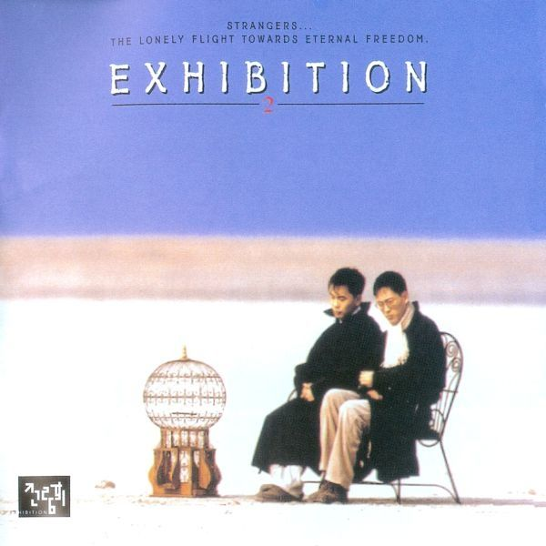

안녕하세요 라보엠입니다
김동률과 함께 전람회의 베이스기타와 작사으로 활동한 서동욱이 2024년 12월 18일, 향년 50세의 나이로 갑자기 세상을 떠났습니다. 그의 사망 소식은 많은 팬들에게 큰 충격을 주었습니다.
전람회의 시작
서동욱은 친구인 김동률과 함께 1993년 MBC 대학가요제에서 재즈 발라드곡 꿈속에서로 대상을 수상하며 가요계에 데뷔했습니다. 이 곡은 서동욱이 가사를 쓴 것으로, 당시 큰 주목을 받았습니다.
전람회와 서동욱
전람회는 1994년 정규 1집을 발표하며, 타이틀곡 기억의 습작이 큰 인기를 얻었습니다. 이 곡은 작곡과 피아노 연주를 맡은 김동률과 작사·베이스기타를 맡은 서동욱의 협력으로 만들어진 클래식감성의 발라드로, 1990년대 감성을 상징하는 곡들 중 하나입니다. 전람회는 이후 취중진담', 이방인, 졸업, 다짐 등 수많은 명곡을 남겼습니다.
- 기억의 습작: 전람회의 데뷔앨범 타이틀곡으로, 클래식한 멜로디와 감성적인 가사가 특징입니다.
- 취중진담: 전람회의 또 다른 대표곡으로, 깊은 감정과 서정적인 가사가 돋보입니다.
- 이방인: 서동욱과 김동률의 협력으로 만들어진 곡으로, 독특한 멜로디와 깊은 가사가 인상적입니다.
- 졸업: 전람회의 또 다른 명곡으로, 졸업을 맞이하는 청춘들의 감정을 깊이 담고 있습니다.
음악 활동 이후
1997년 전람회가 해체된 후, 서동욱은 음악 활동을 그만두고 기업인으로 활동했습니다. 그는 미국 스탠퍼드대에서 경영학석사(MBA) 학위를 취득하고, 맥킨지, 두산그룹, 알바레즈&마샬 등에서 활동한 후, 2015년부터 모건스탠리 프라이빗 에쿼티 부대표로 일했습니다.
맺음말
서동욱의 사망 소식을 접한 팬들은 다양한 반응을 보이며 그를 추모하고 있습니다. 그의 음악은 여전히 많은 사랑을 받고 있으며, 그의 유산은 1990년대 한국 음악계를 대표하는 하나의 중요한 부분으로 남을 것입니다. 고인의 빈소는 연세대학교 신촌 장례식장에 마련되었으며, 발인은 20일 오전 11시 40분에 예정되어 있습니다. 장지는 서울시립승화원입니다.
서동욱의 음악을 통해 우리안에 여전히 남아있는 그의 유산을 기억하는 시간을 가지면 좋겠습니다.
삼가 고인의 명복을 빕니다.
마지막으로 그의 목소리를 들을 수 있는 노래를 남겨두겠습니다.
전람회 2집의 마중가던 길은 몇 안되는 그의 솔로 곡입니다.

전람회 2집 - 마중가던 길
전람회 2집 마중가던 길. 댓글로 팬들의 추모가 이어지고 있습니다.
마중가던 길 노래 가사
널 만나기 위해 길을 나섰지
아무도 모르게
낯익은 가로수
아름드리 나무는 푸른데
날 스쳐가는데
가을 바람은 예전 그모습으로
늘 따뜻한 웃음
날 지켜주던 네 모습은
이제는 허물어져
아른거리는 기억속을 더듬어도
난 생각이 나질 않아
그저 차가운 웃음만이 쌓어갈뿐
난 이제 잊혀지겠지
날 스쳐가는데
가을 바람은 예전 그 모습으로
늘 따뜻한 웃음
날 지켜주던 네 모습은
이제는 허물어져
아른거리는 기억속을 더듬어도
난 생각이 나질 않아
그저 차가운 웃음만이 쌓어갈뿐
난 이제 잊혀지겠지